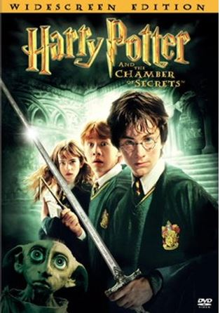
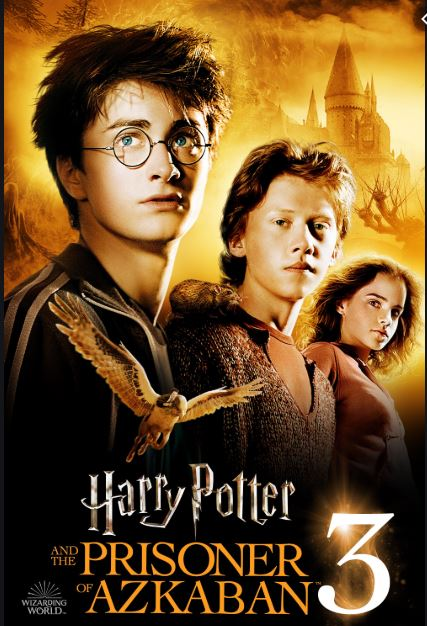

Harry Potter Books
Harry Potter and the Philospher's Stone
Harry Potter, an eleven-year-old orphan, discovers that he is a wizard and is invited to study at Hogwarts. Even as he escapes a dreary life and enters a world of magic, he finds trouble awaiting him. Release date: 12 April 2002 (India) Director: Chris Columbus Film series: Harry Potter Music director: John Williams Box office: 97.51 crores USD

harry potter and the clamber of secrets
A house elf warns Harry against returning to Hogwarts, but he decides to ignore it.
When students and creatures at the school begin to get petrified, Harry finds himself surrounded in mystery.
Release date: 25 April 2003 (India)
Director: Chris Columbus
Box office: 87.92 crores USD
Budget: 10 crores USD
Film series: Harry Potter

harry potter and the prisoners of azkaban
Harry Potter learns that Sirius Black has escaped from the prison of Azkaban and is planning to kill him.
Meanwhile, Hagrid is distraught when his hippogriff, Buckbeak, is sentenced to death.
Release date: 4 June 2004 (India)
Director: Alfonso Cuarón
Budget: 13 crores USD
Box office: 79.69 crores USD
Featured song: Double Trouble

Harry Potter and Dumbledore's warning about the return of Lord Voldemort is not heeded by the wizard authorities who, in turn, look to undermine Dumbledore's authority at Hogwarts and discredit Harry.
harry potter and the goblet of fire
In his fourth year at Hogwarts, Harry is unwittingly selected to compete in the inter-school Triwizard Tournament.
Meanwhile, the wizarding world remains unaware of the ominous rise of dark forces.
Release date: 18 November 2005 (India)
Director: Mike Newell
Box office: 89.71 crores USD
Story by: J. K. Rowling
Screenplay: Steve Kloves

harry potter and the order of the phoenix
Harry Potter and Dumbledore's warning about the return of Lord Voldemort is not heeded by the wizard authorities who, in turn, look to undermine Dumbledore's authority at Hogwarts and discredit Harry.
Release date: 13 July 2007 (India)
Director: David Yates
Box office: 94 crores USD
Budget: 15 crores USD, 7.5 crores GBP
Awards: People's Choice Award for Favorite Dramatic Movie, MORE

harry potter and the half blood prince
Dumbledore and Harry Potter learn more about Voldemort's past and his rise to power.
Meanwhile, Harry stumbles upon an old potions textbook belonging to a person calling himself the Half-Blood Prince.
Initial release: 6 July 2009 (Tokyo)
Director: David Yates
Box office: 93.45 crores USD
Story by: J. K. Rowling
Budget: 25 crores USD, 15 crores GBP

harry potter and the deadly hallows,part-1
Without the guidance and protection of their professors, Harry (Daniel Radcliffe), Ron (Rupert Grint) and Hermione (Emma Watson)
begin a mission to destroy the Horcruxes, the sources of Voldemort's immortality.
Though they must rely on one another more than ever, dark forces threaten to tear them ap… MORE
Release date: 19 November 2010 (India)
Director: David Yates
Box office: 96.04 crores USD
Budget: 25 crores USD
Featured song: O Children

harry potter and the deadly hallows,part-2
Harry, Ron and Hermione race against time to destroy the remaining Horcruxes.
Meanwhile, the students and teachers unite to defend Hogwarts
against Lord Voldemort and the Death Eaters.
Initial release: 7 July 2011 (London)
Director: David Yates
Box office: 134.2 crores USD
Budget: 25 crores USD
Did you know: "Harry Potter and the Deathly Hallows – Part 2" is the sixth-biggest worldwide film opening since 2002
Harry, Ron and Hermione race against time to destroy the remaining Horcruxes.
Meanwhile, the students and teachers unite to defend Hogwarts against Lord Voldemort and the Death Eaters.